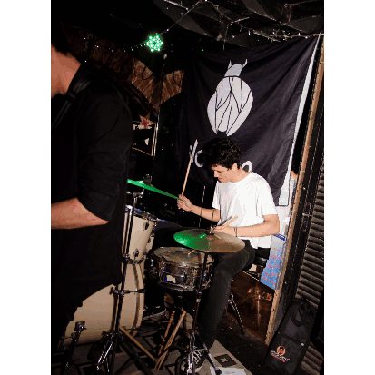
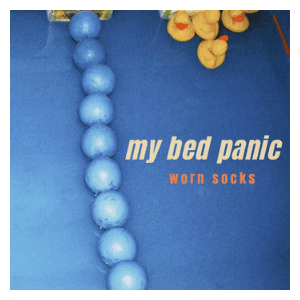

leo ereno
Desde que me conheço por gente sou incapaz de conceber minha existência separada da música.
Ali pelos 10 anos comecei a tocar guitarra, tendo uma referência muito forte do pop-punk, com bandas como blink-182, Sum 41 e Green Day.
Mais pra frente, aos 17 anos, tive minha primeira banda, a Declipp. Começamos como uma banda cover, tocando vários Oasis e Foo Fighters, até que começamos a escrever nossas próprias músicas. Apesar de, inicialmente, ser baixista, sempre contribui bastante com as linhas de guitarra e a direção musical num geral.
Lançamos 2 EPs, You're On The Way, Boy! (2018) e In The Meantime (2019), gravados e produzidos de forma independente.

A banda "acabou" em 2021, depois de algumas divergências pessoais e mediante toda a incerteza do período da pandemia.
Em 2026, depois de trocar algumas ideias, decidimos voltar a tocar juntos pela resenha, além de escrever algumas músicas também.
Ainda nesse mesmo ano, aprendi a produzir e gravar em casa, superando um pouco a timidez vocal e dando luz a leo.txt, meu primeiro projeto solo.
Nesse rolê eu tirei muita inspiração do dreampop, indie e bastante folk nas últimas coisas que lancei lá.
No período de 2021 a 2024 trabalhei com a Seventeen Sunsets, principalmente como produtor e baixista, escrevendo e contribuindo para 2 EPs e 1 álbum. Ao final do ano, encerrei minha participação nesse projeto.
Em 2023 criei um projeto solo em paralelo chamado My Bed Panic. A ideia era ser uma espécie de desafio criativo, onde eu me permitia trabalhar em músicas por, no máximo, 1 hora e em seguida encerrar e lançar como estivesse.
Apesar de ter a expectativa baixa, foi nesse ponto em que eu finalmente entendi o verdadeiro potencial autoexpressivo da arte, canalizando boa parte do que eu estava sentindo e passando na época em um único trabalho.

Sinto que, apesar de ter sido algo rápido e sem compromisso, essa etapa foi essencial para concretizar minha relação com a música.
A Campolargo nasceu no final de 2023 com o lançamento do álbum "A Qualquer Momento", produzido e gravado independemente por nós em casa. Mais pra frente lançamos alguns singles e, no dia 30/10/2025, nosso segundo álbum Velhos Hábitos.
Fizemos alguns shows irados em 2024 e 2025, dividindo o palco com bandas incríveis como Bella e o Olmo da Bruxa, Tangolo Mangos e eliminadorzinho.
A banda começou como algo bem shoegaze e dreampop, mas eu diria que no momento a gente tá bem mais pro post-punk e rock alternativo.
Atualmente sigo trabalhando com a campas como projeto principal e, eventualmente, lançando algo solo aqui e ali.
PRÓXIMOS SHOWS:
11/12/2026 - Campolargo + Vinca Major + Alecto | 92 Graus | Ingressos